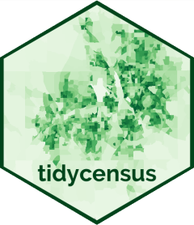
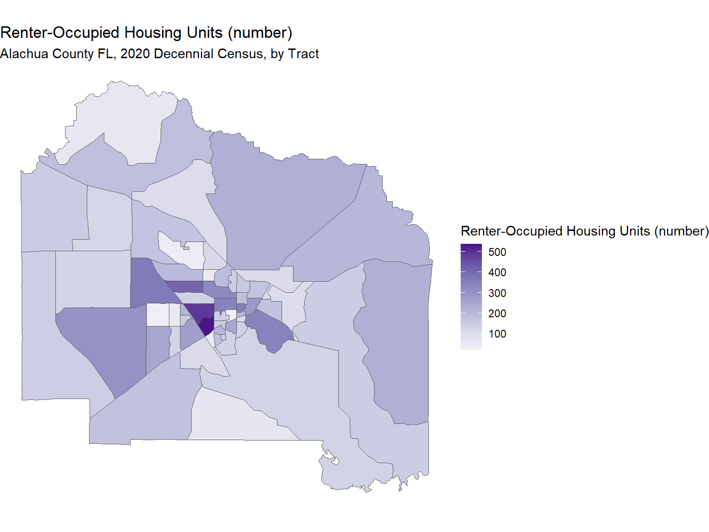
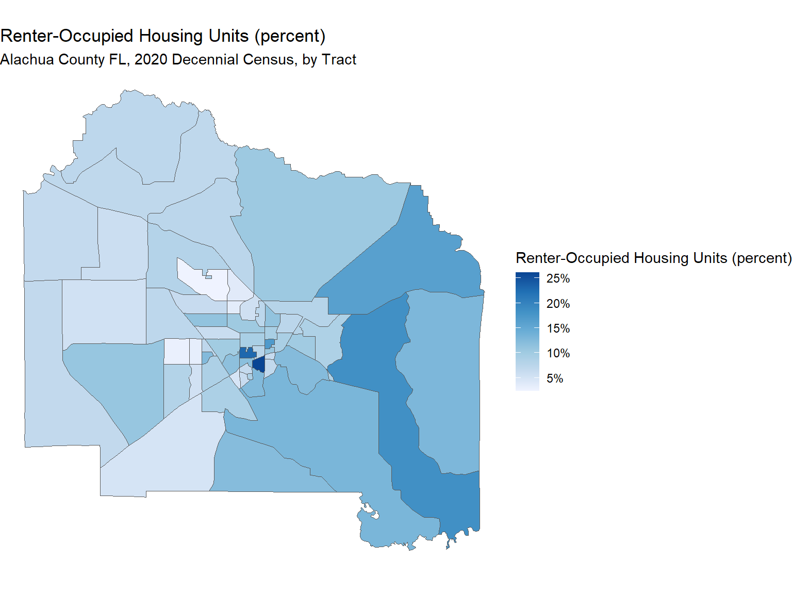

Analyzing Voter Turnout Data with R
Part 3: Importing Census Data

Data
for Democracy, Fall 2024
Andy Lyons

Data
for Democracy, Fall 2024
Andy Lyons


tidycensus
(Kyle Walker and Matt Herman) is an R package that allows users to
request data from the US Census Bureau APIs.
sf objects
get_decennial(). Decennial Census
get_acs(). American Community Survey 1-year and 5-year
summaries
get_estimates(). Population estimates
Our goal here is to make a map showing the percentage of renter occupied housing units for Alachua County FL by Census Tract.
We’ll request data from the 2020 Decennial Census for the following variables:
H1_001N: total housing units
H1_003N: renter-occupied housing units
library(tidycensus)
library(sf)
# census_api_key("YOUR KEY GOES HERE", install = TRUE)
alch_rntr_hsng_num_sf <- get_decennial(geography = "tract",
variables = "H1_003N",
state = "FL",
county = "Alachua",
geometry = TRUE,
progress_bar = FALSE)
## Preview
head(alch_rntr_hsng_num_sf)## Simple feature collection with 6 features and 4 fields
## Geometry type: MULTIPOLYGON
## Dimension: XY
## Bounding box: xmin: -82.44682 ymin: 29.59316 xmax: -82.28928 ymax: 29.68903
## Geodetic CRS: NAD83
## # A tibble: 6 × 5
## GEOID NAME variable value geometry
## <chr> <chr> <chr> <dbl> <MULTIPOLYGON [°]>
## 1 12001000400 Census Tract 4, Alachua … H1_003N 171 (((-82.32413 29.66919, -…
## 2 12001110800 Census Tract 1108, Alach… H1_003N 131 (((-82.37101 29.60378, -…
## 3 12001002218 Census Tract 22.18, Alac… H1_003N 151 (((-82.42245 29.63678, -…
## 4 12001001522 Census Tract 15.22, Alac… H1_003N 539 (((-82.39578 29.63124, -…
## 5 12001001701 Census Tract 17.01, Alac… H1_003N 414 (((-82.4391 29.68895, -8…
## 6 12001001000 Census Tract 10, Alachua… H1_003N 345 (((-82.37246 29.65214, -…
library(ggplot2)
ggplot(alch_rntr_hsng_num_sf, aes(fill = value)) +
geom_sf() +
labs(title = "Renter-Occupied Housing Units (number)",
subtitle = "Alachua County FL, 2020 Decennial Census, by Tract",
fill = "Renter-Occupied Housing Units (number)") +
scale_fill_distiller(palette = "Purples", direction = 1) +
theme_void()
To get the percentage of units that are renter-occupied, we add a summary variable:
library(dplyr)
alch_rntr_hsng_pct_sf <- get_decennial(geography = "tract",
variables = "H1_003N",
summary_var = "H1_001N",
state = "FL",
county = "Alachua",
geometry = TRUE,
progress_bar = FALSE) |>
mutate(rntr_hsng_pct = value / summary_value)## Getting data from the 2020 decennial Census## Downloading feature geometry from the Census website. To cache shapefiles for use in future sessions, set `options(tigris_use_cache = TRUE)`.## Using the PL 94-171 Redistricting Data Summary File## Simple feature collection with 6 features and 6 fields
## Geometry type: MULTIPOLYGON
## Dimension: XY
## Bounding box: xmin: -82.44682 ymin: 29.59316 xmax: -82.28928 ymax: 29.68903
## Geodetic CRS: NAD83
## # A tibble: 6 × 7
## GEOID NAME variable value summary_value geometry
## <chr> <chr> <chr> <dbl> <dbl> <MULTIPOLYGON [°]>
## 1 12001000400 Census Tra… H1_003N 171 2288 (((-82.32413 29.66919, -…
## 2 12001110800 Census Tra… H1_003N 131 1042 (((-82.37101 29.60378, -…
## 3 12001002218 Census Tra… H1_003N 151 1208 (((-82.42245 29.63678, -…
## 4 12001001522 Census Tra… H1_003N 539 4620 (((-82.39578 29.63124, -…
## 5 12001001701 Census Tra… H1_003N 414 3673 (((-82.4391 29.68895, -8…
## 6 12001001000 Census Tra… H1_003N 345 3725 (((-82.37246 29.65214, -…
## # ℹ 1 more variable: rntr_hsng_pct <dbl>
ggplot(alch_rntr_hsng_pct_sf, aes(fill = rntr_hsng_pct)) +
geom_sf() +
labs(title = "Renter-Occupied Housing Units (percent)",
subtitle = "Alachua County FL, 2020 Decennial Census, by Tract",
fill = "Renter-Occupied Housing Units (percent)") +
scale_fill_distiller(palette = "Blues", labels=scales::percent, direction = 1) +
theme_void()
In this exercise, we will: